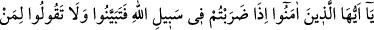
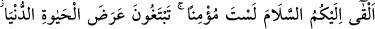
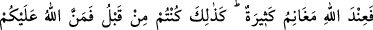
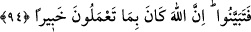

MÜ’MİNİM DİYENE
MÜ’MİN MUAMELESİ YAPMAK
94- Ey îmân edenler! Allah yolunda savaşa çıktığınız zaman iyi anlayıp dinleyin.
Size selam verene, dünyâ hayatının geçici menfaatine göz dikerek «Sen mü’min
değilsin» demeyin. Çünkü Allah’ın nezdinde sayısız ganimetler vardır. Önceden siz
de böyle iken Allah size lütfetti, o halde iyi anlayıp dinleyin. Şüphesiz Allah bütün
yaptıklarınızdan haberdardır.
Bu âyet Fedek ahâlîsinden Mirdas b. Nehîk hakkında nâzil olmuştur. Kavminden
sâdece o müslüman olmuştu. Rasûlullah (a.s) onun kavmine, başında Gâlib b. Fudâle el-
Leysî bulunan bir seriyyeyi gönderdi. Seriyyenin geldiği haberi ulaşınca herkes kaçtı.
Geriye sâdece müslüman olduğuna güvenen Mirdas kaldı. Fedek’e girdiklerinde
seriyyedekiler tekbir getirdiler. Mirdas da onlarla birlikte tekbir getirdi. O sırada
Mirdas bir dağın yamacında idi, yanında koyun sürüsü vardı. Dağdan inip seriyyenin
yanına geldi ve “Lâ ilâhe illallah. Muhammedü’r-rasûlullah. es-Selâmü aleyküm”
dedi. Üsâme b. Zeyd onu öldürdü ve koyunlarını sürüp götürdü. Hâdiseyi Rasûlullah
(s.a.v)’e bildirdiklerinde:
“Lâ ilâhe illallah dediği halde yanındaki koyun sürüsüne tamah ettiğiniz için onu
öldürdünüz öyle mi?” buyurdu. Üsâme:
“O, kalbinden gelerek değil sâdece dili ile söyledi.” veya “Silahtan korktuğu için
kelime-i tevhidi söyledi.” dedi. Rasûlullah (a.s.):
“Kalbini yarıp da doğru mu, yalan mı söylediğine baktın mı?” diyerek bu âyeti
Üsâme’ye okudu. Bunun üzerine Üsâme:
“Yâ Rasûlallah! Benim bağışlanmam için duâ et” dedi. Rasûlullah (s.a.v) hâlâ “Lâ
ilâhe illallah diyeni nasıl öldürürsün!” demeye devam ediyordu. Keşke daha önce
değil, o gün müslüman olsaydım diye temennî ettim.
Sonra Rasûlullah (s.a.v.) benim için istiğfar etti. Koyunları iâde etmemi ve mü’min
bir köle âzâd etmemi emretti.”[114]
“Ey îman edenler! Allah yolunda savaşa çıktığınız zaman iyi anlayıp dinleyin.”
Yâni, gazve için sefere çıktığınızda, yapacağınız ve terkedeceğiniz her şeyi iyice